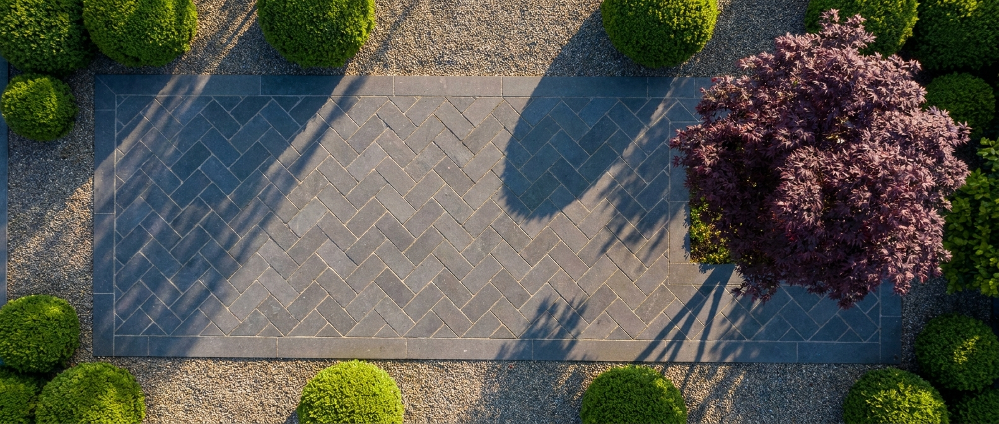
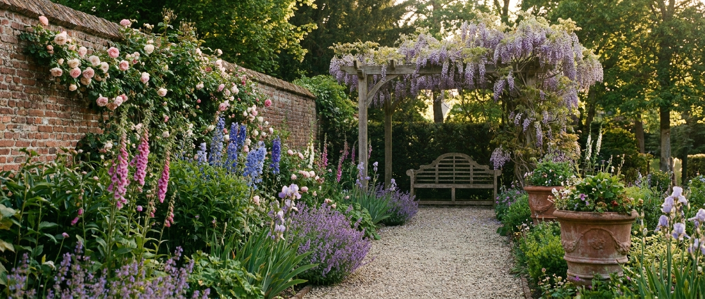
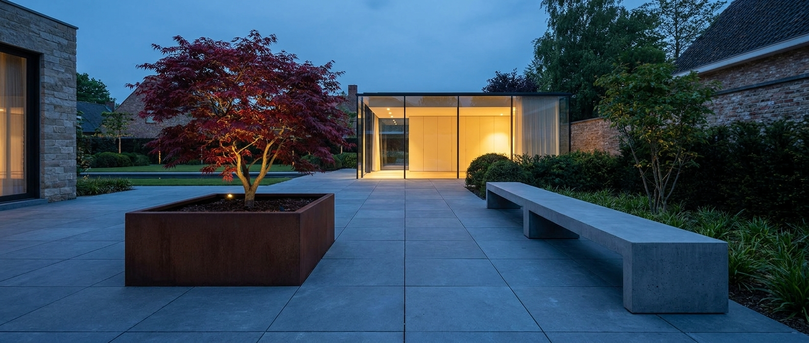

Tuinaannemer · Brugge · sinds 2008
Een familiebedrijf met vier mensen. We doen onze eigen werven, onze eigen beplanting, ons eigen onderhoud. Geen onderaannemers.
Familie · Brugse Ommeland
Recent · 2025–2026

Stadstuin · 8000 Brugge
125 m² achter een 18de-eeuwse rijwoning. Bluesteen visgraat, cortenstaal plantbakken, 22 vaste planten.
Week 17 / 2026 — opgeleverd

Pastorij · 8380 Lissewege
2 200 m² rond een 16de-eeuwse pastorij. Borders gedompeld in inheemse vaste planten en oude rozen, kasseiwerk hersteld op originele plek.
2025 — onderhoud lopend

Architectenwoning · 8200 Sint-Michiels
480 m² rond een nieuwbouw. Eén Japanse esdoorn, één corten plantbak, één bluesteen plateau van 60 m². Verder niets — dat was de wens.
Najaar 2024
Werkfilosofie
Ontwerp, beplanting, gazon, irrigatie. Eerste jaar gegarandeerd.
Bluesteen, kassei, gravel. Eigen mensen, eigen leverancier in Soignies.
Cortenstaal, thermisch hardhout, smeedijzer. Op maat.
Acht bezoeken per jaar. Vaste mensen, vaste prijs, foto-rapport na elk bezoek.
Wat staat er nu in onze grond
Een korte greep uit wat we deze maand op de werven hebben staan. Allemaal van twee Vlaamse kwekerijen waarmee we al jaren werken — Pampaplanten in Wachtebeke en Boomkwekerij Notaris in Aalter.
Buxus vervangen we sinds de buxusmot stilaan door Ilex crenata en Lonicera nitida. Het kleurt anders, maar werkt.
Carpinus betulus — haagbeuk 400 st Hydrangea paniculata 'Limelight' 42 st Salvia 'Caradonna' — siersalie 180 st Lavandula angustifolia 'Hidcote' 240 st Pennisetum 'Hameln' — pluimriet 85 st Calamagrostis 'Karl Foerster' 120 st Cornus alba 'Sibirica' — rode kornoelje 16 st Ilex crenata 'Dark Green' — als buxusvervanger 60 st Lonicera nitida 'Maigrun' 45 st Acer palmatum 'Bloodgood' — solitair 3 st
Wat klanten zeggen
Drie jaar later is de tuin nog steeds zoals op de oplevering — alleen voller. Dat is precies wat ze beloofd hadden.
Pieter kwam zelf op het eerste bezoek. En op het tweede. En op de werf elke ochtend. Dat zijn we niet meer gewoon.
De prijs in de offerte was de prijs op de factuur. Geen meerwerk, geen verrassingen. Klein detail. Groot verschil.
Waar wij werken
Zo blijft elk onderhoudsbezoek een halve dag. En zo kennen we elke werf nog van vroeger.
Volgende stap
Pieter komt langs op een moment dat past, kijkt rond, en stuurt binnen vijf werkdagen een schets met richtprijs. Geen voorschot voor u akkoord bent.
Plan een bezoek